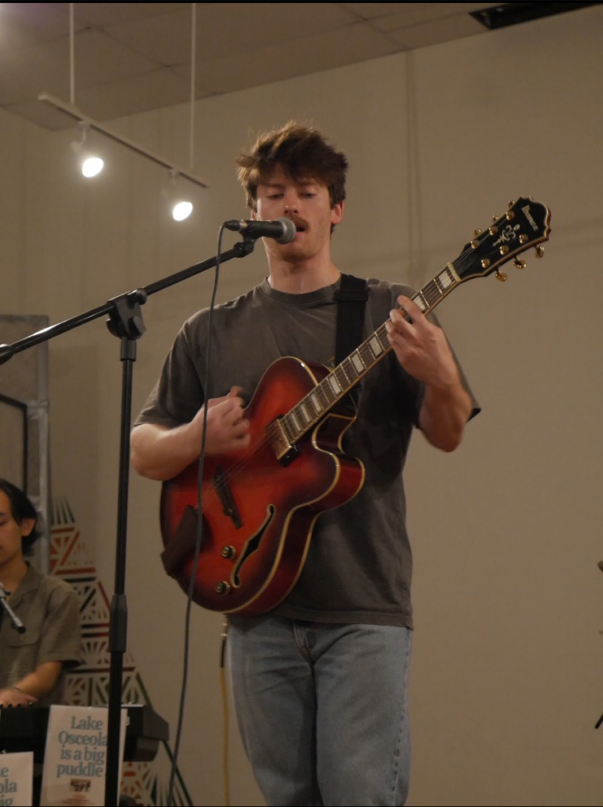
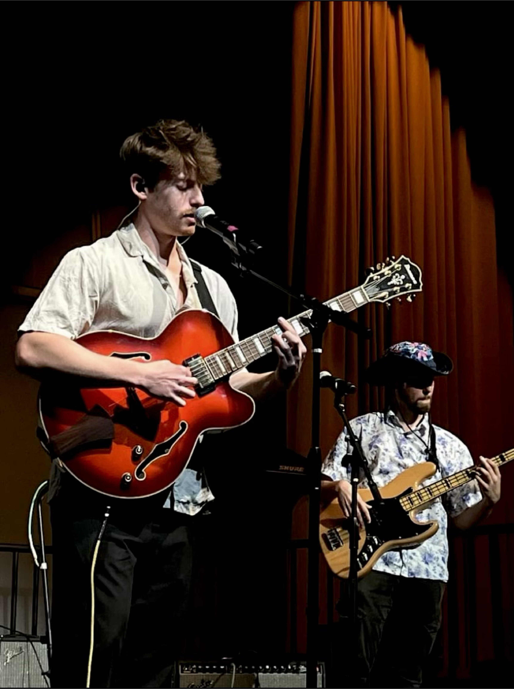
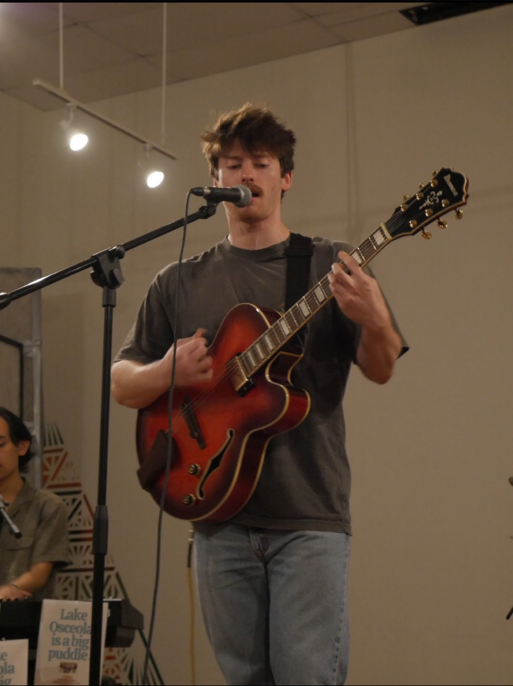
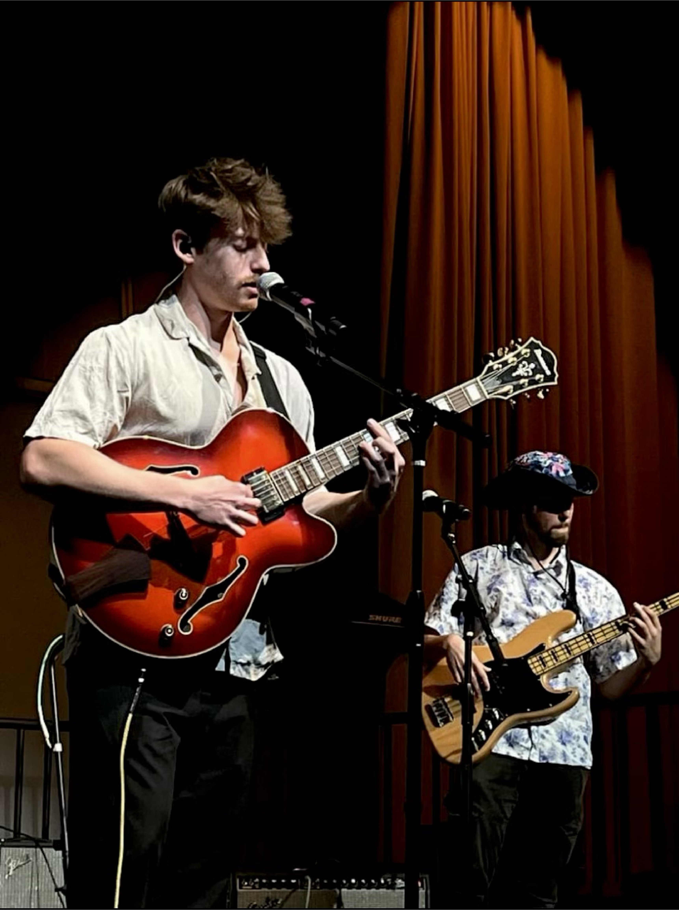

Music Experience
Louis began his musical journey at the age of eight, starting with the drum set. Over time, he progressed through many different instruments until he was 12, when he joined his middle school's band. Throughout middle school and most of high school, Louis played the bass clarinet and tenor saxophone.
Pinellas County Center for the Arts
Louis attended high school at the Pinellas County Center for the Arts, where he discovered his passion for singing. This experience led him on his path to pursuing his post-secondary education in music at the Frost School of Music at the University of Miami.
Louis' Favorite Genres of Music
- Funk
- Soul
- R&B
Louis' Musical Influences
- Stevie Wonder
- James Brown
- Yebba
Louis In Action
 


